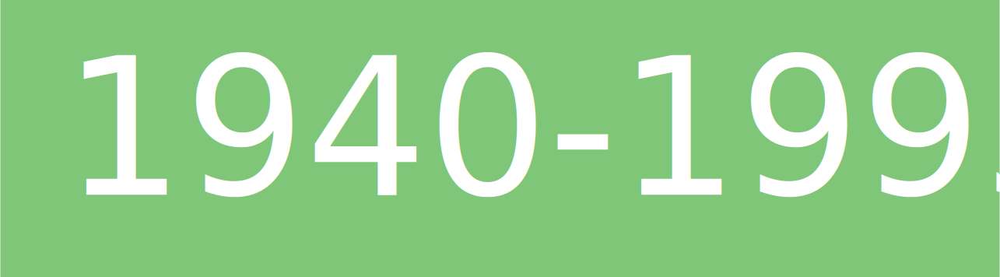

The history of the bridge


Around 1860, a pedestrian bridge was built to Klein Eiland, popularly called ‘halfcenkensburg’ because you had to pay half a centime to cross the bridge. Later, the bridge was named ‘het Boetje’, after the name of a pub nearby. The bridge ‘het Boetje’ at the widening of the canal around 1926. Construction of the Biestebroeck Bridge around 1926.
The Biestebroeck Bridge was blown up in May 1940 to stop the German army’s advance, as were the other bridges over the canal in Brussels. A temporary construction allowed pedestrians and cyclists to use the bridge again. The bridge was popularly called ‘the broken bridge’.
A narrow passage allowed pedestrians and cyclists to cross the bridge. This situation lasted for 32 years and nature was given free rein on the bridge. A new bridge was built and inaugurated on 23 September 1972. This was a pedestrian bridge for 106 years and a car bridge for 55 years. The future of this bridge will be decided soon. Photo 1995.

Schilderij van Oliver Slosse

.svg)
 facebook
facebook instagram
instagram locatie
locatie